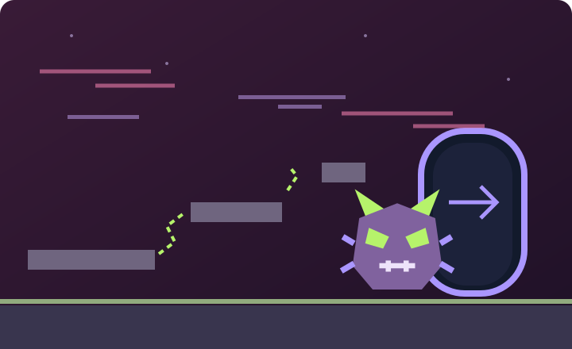
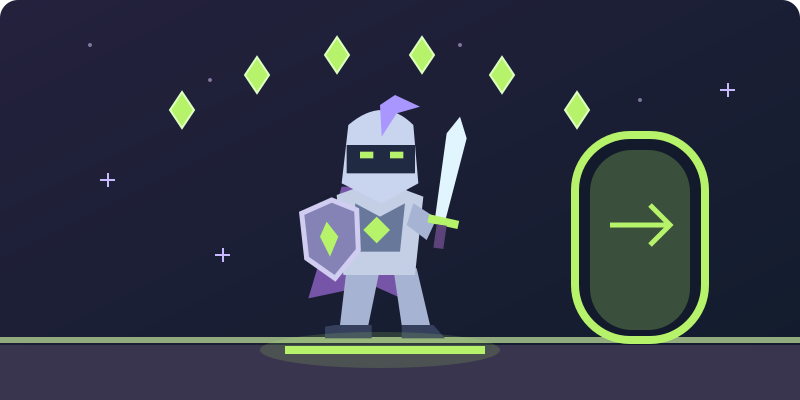

MODO AVENTURA / EL JUEGO QUE NUNCA TERMINÓ
Ayúdalo a escribir su final.
Un caballero descubre que vive dentro de un videojuego abandonado. Aprende cómo se construye un juego, repara su mundo y abre el camino al capítulo que nunca existió.

HISTORIA / 1 DE 3
Un mundo sin final
RECONSTRUIR EL JUEGO · SEIS ZONAS
ZONA 01 / EL VALLE DEL PROTOTIPO
Recupera el primer fragmento.
⚔ Acierto: atacas y vences. Error: el enemigo te derrota.
MISIÓN 01
◆ +1 fragmento · +100 XP
AVENTURA COMPLETADA
Esta vez, tú escribiste el final.
El Error Final ha caído. Con los seis fragmentos, el mundo recupera sus reglas y sus habitantes pueden continuar su historia. El caballero cruza una puerta que antes no existía: su aventura, por fin, tiene un final.
Sin límite de intentos. El progreso dura mientras esta página esté abierta.
¿Reiniciar desde el nivel 1? Se perderán los fragmentos y la experiencia de esta partida.